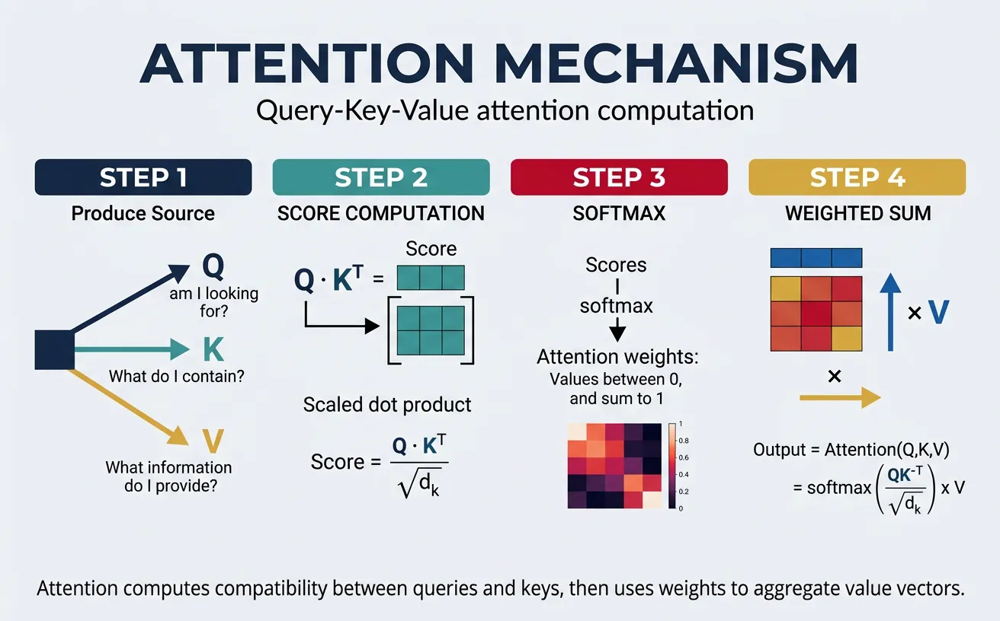
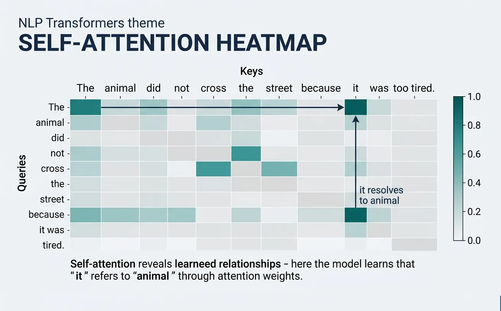
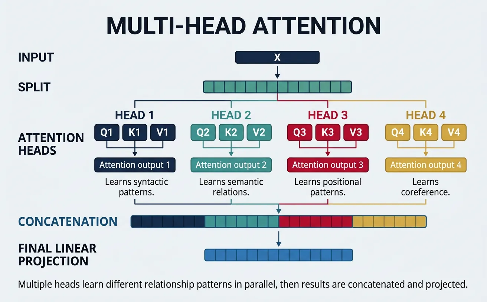
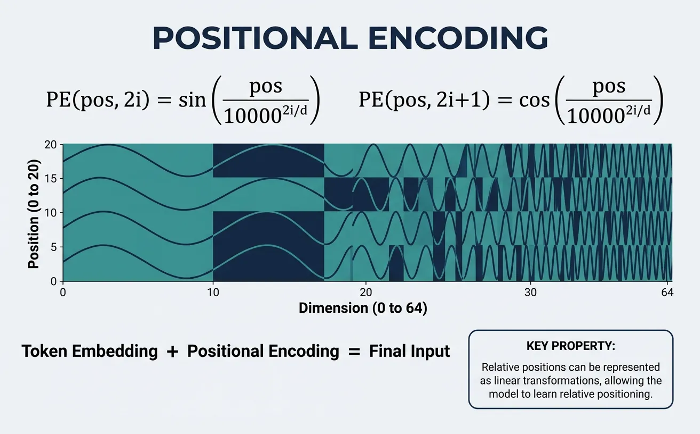
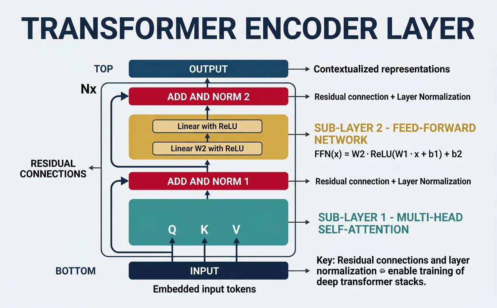

Introduction to Transformers
The Transformer architecture, introduced in "Attention Is All You Need" (2017), revolutionized NLP by replacing recurrence with self-attention, enabling parallel processing and better long-range dependency modeling.
Key Insight
Transformers use self-attention to weigh the importance of different parts of the input when encoding each position, allowing direct modeling of relationships regardless of distance.
NLP Mastery
NLP Fundamentals & Linguistic Basics
Phonology, morphology, syntax, semantics, pragmaticsTokenization & Text Cleaning
Subword tokenization, BPE, stopwords, normalizationText Representation & Feature Engineering
Bag-of-words, TF-IDF, feature extraction, vectorizationWord Embeddings
Word2Vec, GloVe, FastText, embedding spaces, analogiesStatistical Language Models & N-grams
Probability chains, smoothing, perplexity, Markov modelsNeural Networks for NLP
Feedforward nets, backpropagation, activation functionsRNNs, LSTMs & GRUs
Sequence modeling, vanishing gradients, gated architecturesTransformers & Attention Mechanism
Self-attention, multi-head attention, positional encodingPretrained Language Models & Transfer Learning
BERT, RoBERTa, fine-tuning, feature extractionGPT Models & Text Generation
Autoregressive generation, prompting, GPT architectureCore NLP Tasks
NER, POS tagging, sentiment analysis, text classificationAdvanced NLP Tasks
Question answering, summarization, machine translationMultilingual & Cross-lingual NLP
mBERT, XLM-R, zero-shot transfer, language diversityEvaluation, Ethics & Responsible NLP
BLEU, ROUGE, bias detection, fairness, responsible AINLP Systems, Optimization & Production
Model serving, quantization, distillation, deploymentCutting-Edge & Research Topics
LLMs, multimodal NLP, reasoning, emerging researchThe Attention Mechanism
The attention mechanism is the core innovation that powers Transformers. Unlike RNNs that process sequences step-by-step, attention allows the model to look at all positions simultaneously and decide which parts of the input are most relevant for each output position. This "soft selection" of relevant information is learned during training and adapts to each specific input.
The fundamental idea comes from human cognition: when reading a sentence, you don't give equal weight to every word. Instead, you focus on the most relevant parts based on context. Attention mechanisms formalize this intuition mathematically, enabling neural networks to dynamically focus on different parts of the input when producing each output element.

Why Attention Matters
Attention solves the information bottleneck problem that plagues sequence-to-sequence models. Instead of compressing an entire input sequence into a single fixed-size vector, attention allows the decoder to access all encoder hidden states directly, weighted by their relevance to the current decoding step.
Scaled Dot-Product Attention
Scaled dot-product attention is the specific attention variant used in Transformers. Given a query vector Q, a set of key vectors K, and value vectors V, attention computes a weighted sum of the values, where the weights are determined by the compatibility between the query and each key. The "scaled" part refers to dividing by the square root of the dimension to prevent softmax from producing extremely peaked distributions in high dimensions.
The mathematical formula, where $d_k$ is the dimension of the keys, is:
$$\text{Attention}(Q, K, V) = \text{softmax}\!\left(\frac{QK^\top}{\sqrt{d_k}}\right) V$$
The dot product $QK^\top$ measures similarity between queries and keys, softmax normalizes these scores into a probability distribution, and the result weights the values. This simple yet powerful formulation is highly parallelizable and efficient.
import torch
import torch.nn as nn
import torch.nn.functional as F
import math
def scaled_dot_product_attention(query, key, value, mask=None):
"""
Compute scaled dot-product attention.
Args:
query: Tensor of shape (batch, num_heads, seq_len, d_k)
key: Tensor of shape (batch, num_heads, seq_len, d_k)
value: Tensor of shape (batch, num_heads, seq_len, d_v)
mask: Optional attention mask
Returns:
output: Weighted sum of values
attention_weights: Attention probability distribution
"""
d_k = query.size(-1)
# Compute attention scores: (batch, heads, seq_len, seq_len)
scores = torch.matmul(query, key.transpose(-2, -1)) / math.sqrt(d_k)
# Apply mask if provided (for padding or causal attention)
if mask is not None:
scores = scores.masked_fill(mask == 0, float('-inf'))
# Softmax to get attention weights (probabilities)
attention_weights = F.softmax(scores, dim=-1)
# Weighted sum of values
output = torch.matmul(attention_weights, value)
return output, attention_weights
# Example usage
batch_size, num_heads, seq_len, d_k = 2, 4, 10, 64
query = torch.randn(batch_size, num_heads, seq_len, d_k)
key = torch.randn(batch_size, num_heads, seq_len, d_k)
value = torch.randn(batch_size, num_heads, seq_len, d_k)
output, weights = scaled_dot_product_attention(query, key, value)
print(f"Output shape: {output.shape}") # (2, 4, 10, 64)
print(f"Attention weights shape: {weights.shape}") # (2, 4, 10, 10)
print(f"Weights sum per query position: {weights.sum(dim=-1)[0, 0]}") # Should be ~1.0Queries, Keys & Values
The Query-Key-Value (QKV) framework provides an intuitive way to understand attention. Think of it like a retrieval system: the query represents what you're looking for, keys represent labels or indices of stored information, and values contain the actual content to retrieve. The attention mechanism compares the query against all keys to determine which values are most relevant.
In practice, Q, K, and V are computed by projecting the input through three separate learned weight matrices. This allows the model to learn different representations for matching (Q and K) versus content (V). For self-attention, all three come from the same input sequence; for cross-attention (encoder-decoder), Q comes from the decoder while K and V come from the encoder output.
import torch
import torch.nn as nn
class QKVProjection(nn.Module):
"""Project input into Query, Key, and Value representations."""
def __init__(self, d_model, d_k, d_v):
super().__init__()
self.W_q = nn.Linear(d_model, d_k) # Query projection
self.W_k = nn.Linear(d_model, d_k) # Key projection
self.W_v = nn.Linear(d_model, d_v) # Value projection
def forward(self, x_query, x_key, x_value):
"""
For self-attention: x_query = x_key = x_value = input
For cross-attention: x_query = decoder, x_key = x_value = encoder
"""
Q = self.W_q(x_query) # What am I looking for?
K = self.W_k(x_key) # What information is available?
V = self.W_v(x_value) # What content should I retrieve?
return Q, K, V
# Example: Self-attention QKV
d_model, d_k, d_v = 512, 64, 64
seq_len, batch_size = 20, 4
qkv_proj = QKVProjection(d_model, d_k, d_v)
input_seq = torch.randn(batch_size, seq_len, d_model)
# Self-attention: same input for all three
Q, K, V = qkv_proj(input_seq, input_seq, input_seq)
print(f"Query shape: {Q.shape}") # (4, 20, 64)
print(f"Key shape: {K.shape}") # (4, 20, 64)
print(f"Value shape: {V.shape}") # (4, 20, 64)
# Cross-attention: different sources
encoder_output = torch.randn(batch_size, 30, d_model) # Source sequence
decoder_input = torch.randn(batch_size, 10, d_model) # Target sequence
Q_cross, K_cross, V_cross = qkv_proj(decoder_input, encoder_output, encoder_output)
print(f"\nCross-attention Query: {Q_cross.shape}") # (4, 10, 64) - from decoder
print(f"Cross-attention Key: {K_cross.shape}") # (4, 30, 64) - from encoder
print(f"Cross-attention Value: {V_cross.shape}") # (4, 30, 64) - from encoderAttention Score Interpretation
Attention weights tell us which input positions the model "focuses on" when processing each position:
- High weight: Strong relevance (e.g., pronoun attending to its antecedent)
- Uniform weights: Global context aggregation (common in early layers)
- Sparse patterns: Syntactic relationships (later layers often show grammatical structure)
- Diagonal patterns: Position-sensitive features (local context)
Self-Attention
Self-attention is the specific application of attention where a sequence attends to itself. Each position in the input sequence can directly interact with every other position, creating rich contextual representations. This is the key mechanism that allows Transformers to capture long-range dependencies without the sequential bottleneck of RNNs—a token at position 1 can directly attend to position 1000 in a single operation.
In self-attention, the same input sequence is used to generate all three components: queries, keys, and values. Each token asks "what other tokens in this sequence are relevant to me?" and receives information weighted by the answers. This bidirectional context (in encoders) or causal context (in decoders) enables sophisticated understanding of language structure, semantics, and relationships.

graph TD
subgraph Encoder["Encoder (×N)"]
E_IN["Input Embedding\n+ Positional Encoding"]
E_SA["Multi-Head\nSelf-Attention"]
E_AN1["Add & Norm"]
E_FF["Feed-Forward\nNetwork"]
E_AN2["Add & Norm"]
E_IN --> E_SA --> E_AN1 --> E_FF --> E_AN2
end
subgraph Decoder["Decoder (×N)"]
D_IN["Output Embedding\n+ Positional Encoding"]
D_SA["Masked Multi-Head\nSelf-Attention"]
D_AN1["Add & Norm"]
D_CA["Multi-Head\nCross-Attention"]
D_AN2["Add & Norm"]
D_FF["Feed-Forward\nNetwork"]
D_AN3["Add & Norm"]
D_IN --> D_SA --> D_AN1 --> D_CA --> D_AN2 --> D_FF --> D_AN3
end
E_AN2 -->|"Keys, Values"| D_CA
D_AN3 --> LINEAR["Linear + Softmax"]
LINEAR --> OUT["Output\nProbabilities"]
import torch
import torch.nn as nn
import torch.nn.functional as F
import math
class SelfAttention(nn.Module):
"""Single-head self-attention layer."""
def __init__(self, d_model, d_k=None, d_v=None):
super().__init__()
self.d_k = d_k or d_model
self.d_v = d_v or d_model
# Projection matrices
self.W_q = nn.Linear(d_model, self.d_k)
self.W_k = nn.Linear(d_model, self.d_k)
self.W_v = nn.Linear(d_model, self.d_v)
def forward(self, x, mask=None):
"""
Self-attention: input attends to itself.
Args:
x: Input tensor (batch, seq_len, d_model)
mask: Optional attention mask
Returns:
output: Contextualized representations
weights: Attention weight matrix
"""
# Project input to Q, K, V
Q = self.W_q(x) # (batch, seq_len, d_k)
K = self.W_k(x) # (batch, seq_len, d_k)
V = self.W_v(x) # (batch, seq_len, d_v)
# Scaled dot-product attention
scores = torch.matmul(Q, K.transpose(-2, -1)) / math.sqrt(self.d_k)
if mask is not None:
scores = scores.masked_fill(mask == 0, float('-inf'))
attention_weights = F.softmax(scores, dim=-1)
output = torch.matmul(attention_weights, V)
return output, attention_weights
# Example: Self-attention on a sentence
d_model = 256
self_attn = SelfAttention(d_model)
# Simulated embedded sentence: "The cat sat on the mat"
batch_size, seq_len = 1, 6
sentence_embeddings = torch.randn(batch_size, seq_len, d_model)
contextualized, weights = self_attn(sentence_embeddings)
print(f"Input shape: {sentence_embeddings.shape}")
print(f"Output shape: {contextualized.shape}") # Same as input
print(f"Attention matrix shape: {weights.shape}") # (1, 6, 6)
print(f"\nAttention from position 0 to all positions:")
print(weights[0, 0, :]) # How much token 0 attends to each tokenCausal (Masked) Self-Attention
In language modeling and decoder architectures, we need causal self-attention where each position can only attend to previous positions (including itself). This prevents "cheating" by looking at future tokens during training. The causal mask is a lower-triangular matrix that sets attention weights to negative infinity for future positions, ensuring zero probability after softmax.
import torch
import torch.nn as nn
import torch.nn.functional as F
import math
def create_causal_mask(seq_len):
"""Create causal attention mask (lower triangular)."""
# 1s for positions we can attend to, 0s for positions to mask
mask = torch.tril(torch.ones(seq_len, seq_len))
return mask
class CausalSelfAttention(nn.Module):
"""Self-attention with causal masking for autoregressive models."""
def __init__(self, d_model, max_seq_len=512):
super().__init__()
self.d_model = d_model
self.W_q = nn.Linear(d_model, d_model)
self.W_k = nn.Linear(d_model, d_model)
self.W_v = nn.Linear(d_model, d_model)
# Register causal mask as buffer (not a parameter)
mask = create_causal_mask(max_seq_len)
self.register_buffer('causal_mask', mask)
def forward(self, x):
batch_size, seq_len, _ = x.shape
Q = self.W_q(x)
K = self.W_k(x)
V = self.W_v(x)
# Compute attention scores
scores = torch.matmul(Q, K.transpose(-2, -1)) / math.sqrt(self.d_model)
# Apply causal mask
mask = self.causal_mask[:seq_len, :seq_len]
scores = scores.masked_fill(mask == 0, float('-inf'))
attention_weights = F.softmax(scores, dim=-1)
output = torch.matmul(attention_weights, V)
return output, attention_weights
# Example: Causal attention for language modeling
causal_attn = CausalSelfAttention(d_model=256)
# Sequence: positions can only see themselves and earlier positions
sequence = torch.randn(2, 8, 256) # batch=2, seq_len=8
output, weights = causal_attn(sequence)
print("Causal attention weights (batch 0):")
print(weights[0].round(decimals=2))
# Lower triangular pattern - position i only attends to positions 0..iSelf-Attention Complexity
Time complexity: O(n² × d) where n is sequence length and d is dimension. This quadratic scaling with sequence length is the main limitation of Transformers, motivating efficient variants like Linformer, Performer, and sparse attention patterns for very long sequences.
Attention Dropout: Regularizing Attention Weights
In practice, Transformers apply dropout to attention weights after softmax and before multiplying with values. This randomly zeroes out some attention connections during training, forcing the model to not rely too heavily on any single token-to-token relationship. This is a crucial regularization technique that prevents overfitting, especially in large models.
The dropout is applied after softmax normalization, which means some attention weights become zero randomly during each training step. The model must learn robust, distributed attention patterns rather than "memorizing" specific shortcuts. During inference, dropout is disabled and all connections are active.
import torch
import torch.nn as nn
import torch.nn.functional as F
import math
class SelfAttentionWithDropout(nn.Module):
"""Self-attention with attention dropout (as used in all production Transformers)."""
def __init__(self, d_model, dropout_rate=0.1):
super().__init__()
self.d_model = d_model
self.W_q = nn.Linear(d_model, d_model)
self.W_k = nn.Linear(d_model, d_model)
self.W_v = nn.Linear(d_model, d_model)
self.attn_dropout = nn.Dropout(dropout_rate) # Applied to attention weights
self.output_dropout = nn.Dropout(dropout_rate) # Applied to output
def forward(self, x, mask=None):
Q = self.W_q(x)
K = self.W_k(x)
V = self.W_v(x)
# Compute attention scores
scores = torch.matmul(Q, K.transpose(-2, -1)) / math.sqrt(self.d_model)
if mask is not None:
scores = scores.masked_fill(mask == 0, float('-inf'))
# Softmax -> Dropout -> Matmul with V
attention_weights = F.softmax(scores, dim=-1)
attention_weights = self.attn_dropout(attention_weights) # Key: dropout AFTER softmax
output = torch.matmul(attention_weights, V)
output = self.output_dropout(output) # Also dropout on output
return output, attention_weights
# Demonstrate dropout effect
model = SelfAttentionWithDropout(d_model=64, dropout_rate=0.2)
x = torch.randn(1, 6, 64) # 6-token sequence
# Training mode: some attention weights randomly zeroed
model.train()
out_train, weights_train = model(x)
zeros_train = (weights_train == 0).sum().item()
# Eval mode: full attention (no dropout)
model.eval()
with torch.no_grad():
out_eval, weights_eval = model(x)
zeros_eval = (weights_eval == 0).sum().item()
print(f"Training: {zeros_train} attention weights zeroed (out of {weights_train.numel()})")
print(f"Eval: {zeros_eval} attention weights zeroed (all connections active)")
print(f"\nDropout rate 0.2 means ~20% of connections randomly removed during training")
Where Dropout Appears in a Transformer Block
A standard Transformer block applies dropout in three places: (1) on attention weights (after softmax), (2) on the attention output (before the residual connection), and (3) on the feed-forward output (before the residual connection). All three use the same dropout rate (typically 0.1). During pretraining of large models like GPT-3, dropout is sometimes set to 0.0 because the massive dataset already provides sufficient regularization.
Multi-Head Attention
Multi-head attention is one of the most important innovations in the Transformer architecture. Instead of performing a single attention function, we run multiple attention operations ("heads") in parallel, each with different learned projections. This allows the model to jointly attend to information from different representation subspaces at different positions—capturing various types of relationships simultaneously.
Each head operates on a reduced dimension (d_model / num_heads), so the total computation is similar to single-head attention at full dimension. The outputs from all heads are concatenated and projected through a final linear layer. Different heads often learn to focus on different linguistic phenomena: some capture syntactic dependencies, others semantic relationships, positional patterns, or coreference chains.

import torch
import torch.nn as nn
import torch.nn.functional as F
import math
class MultiHeadAttention(nn.Module):
"""
Multi-Head Attention as described in "Attention Is All You Need".
"""
def __init__(self, d_model, num_heads, dropout=0.1):
super().__init__()
assert d_model % num_heads == 0, "d_model must be divisible by num_heads"
self.d_model = d_model
self.num_heads = num_heads
self.d_k = d_model // num_heads # Dimension per head
# Linear projections for Q, K, V (combined for efficiency)
self.W_q = nn.Linear(d_model, d_model)
self.W_k = nn.Linear(d_model, d_model)
self.W_v = nn.Linear(d_model, d_model)
# Output projection
self.W_o = nn.Linear(d_model, d_model)
self.dropout = nn.Dropout(dropout)
def split_heads(self, x, batch_size):
"""Split the last dimension into (num_heads, d_k)."""
x = x.view(batch_size, -1, self.num_heads, self.d_k)
return x.transpose(1, 2) # (batch, heads, seq_len, d_k)
def forward(self, query, key, value, mask=None):
batch_size = query.size(0)
# Linear projections
Q = self.W_q(query) # (batch, seq_len, d_model)
K = self.W_k(key)
V = self.W_v(value)
# Split into multiple heads
Q = self.split_heads(Q, batch_size) # (batch, heads, seq_len, d_k)
K = self.split_heads(K, batch_size)
V = self.split_heads(V, batch_size)
# Scaled dot-product attention for each head
scores = torch.matmul(Q, K.transpose(-2, -1)) / math.sqrt(self.d_k)
if mask is not None:
# Expand mask for heads dimension
if mask.dim() == 2:
mask = mask.unsqueeze(0).unsqueeze(0)
scores = scores.masked_fill(mask == 0, float('-inf'))
attention_weights = F.softmax(scores, dim=-1)
attention_weights = self.dropout(attention_weights)
# Apply attention to values
context = torch.matmul(attention_weights, V) # (batch, heads, seq_len, d_k)
# Concatenate heads
context = context.transpose(1, 2).contiguous() # (batch, seq_len, heads, d_k)
context = context.view(batch_size, -1, self.d_model) # (batch, seq_len, d_model)
# Final linear projection
output = self.W_o(context)
return output, attention_weights
# Example: Multi-head attention
d_model, num_heads = 512, 8
mha = MultiHeadAttention(d_model, num_heads)
batch_size, seq_len = 4, 20
x = torch.randn(batch_size, seq_len, d_model)
# Self-attention (query=key=value)
output, weights = mha(x, x, x)
print(f"Input shape: {x.shape}")
print(f"Output shape: {output.shape}") # Same as input
print(f"Attention weights shape: {weights.shape}") # (batch, heads, seq_len, seq_len)
print(f"Each head's d_k: {d_model // num_heads}") # 64Visualizing Attention Heads
Different attention heads specialize in capturing different types of patterns. Researchers have found that specific heads often correspond to interpretable linguistic relationships, such as subject-verb agreement, coreference resolution, or positional proximity. Analyzing these patterns helps us understand what Transformers learn.
import torch
import torch.nn as nn
import torch.nn.functional as F
import matplotlib.pyplot as plt
import seaborn as sns
import math
# MultiHeadAttention included here for a self-contained, runnable example
class MultiHeadAttention(nn.Module):
def __init__(self, d_model, num_heads, dropout=0.1):
super().__init__()
assert d_model % num_heads == 0
self.d_model = d_model
self.num_heads = num_heads
self.d_k = d_model // num_heads
self.W_q = nn.Linear(d_model, d_model)
self.W_k = nn.Linear(d_model, d_model)
self.W_v = nn.Linear(d_model, d_model)
self.W_o = nn.Linear(d_model, d_model)
self.dropout = nn.Dropout(dropout)
def split_heads(self, x, batch_size):
x = x.view(batch_size, -1, self.num_heads, self.d_k)
return x.transpose(1, 2)
def forward(self, query, key, value, mask=None):
batch_size = query.size(0)
Q = self.split_heads(self.W_q(query), batch_size)
K = self.split_heads(self.W_k(key), batch_size)
V = self.split_heads(self.W_v(value), batch_size)
scores = torch.matmul(Q, K.transpose(-2, -1)) / math.sqrt(self.d_k)
if mask is not None:
if mask.dim() == 2:
mask = mask.unsqueeze(0).unsqueeze(0)
scores = scores.masked_fill(mask == 0, float('-inf'))
weights = self.dropout(F.softmax(scores, dim=-1))
context = torch.matmul(weights, V).transpose(1, 2).contiguous()
return self.W_o(context.view(batch_size, -1, self.d_model)), weights
def visualize_attention_heads(attention_weights, tokens, num_heads_to_show=4):
"""
Visualize attention patterns for multiple heads.
Args:
attention_weights: Tensor (num_heads, seq_len, seq_len)
tokens: List of token strings
num_heads_to_show: Number of heads to display
"""
fig, axes = plt.subplots(1, num_heads_to_show, figsize=(4*num_heads_to_show, 4))
for i in range(num_heads_to_show):
ax = axes[i] if num_heads_to_show > 1 else axes
weights = attention_weights[i].detach().cpu().numpy()
sns.heatmap(weights, ax=ax, cmap='Blues',
xticklabels=tokens, yticklabels=tokens,
cbar=i == num_heads_to_show - 1)
ax.set_title(f'Head {i+1}')
ax.set_xlabel('Key Position')
ax.set_ylabel('Query Position')
plt.tight_layout()
plt.savefig('attention_heads.png', dpi=150, bbox_inches='tight')
plt.show()
# Example: Analyze attention patterns
tokens = ['The', 'cat', 'sat', 'on', 'the', 'mat', '.']
seq_len = len(tokens)
num_heads = 8
d_model = 256
mha = MultiHeadAttention(d_model, num_heads)
x = torch.randn(1, seq_len, d_model)
_, weights = mha(x, x, x)
# weights shape: (1, 8, 7, 7) -> squeeze batch dimension
print(f"Attention weights per head: {weights.shape}")
visualize_attention_heads(weights[0], tokens, num_heads_to_show=4)What Different Heads Learn
Studies on BERT's attention heads have revealed specialized patterns:
- Positional heads: Attend to adjacent positions (local context)
- Separator heads: Focus on [SEP] and [CLS] tokens
- Syntactic heads: Track dependency parse relationships
- Coreference heads: Link pronouns to their referents
- Rare word heads: Redistribute attention when encountering OOV tokens
Reference: Clark et al. (2019) "What Does BERT Look At?"
Attention Visualization Tools
Beyond custom matplotlib heatmaps, several dedicated libraries provide interactive, publication-quality attention visualizations. BertViz is the most widely used tool for exploring multi-head and multi-layer attention in Transformer models.
## BertViz — Interactive Multi-Head Attention Visualization
## Install: pip install bertviz transformers torch
from bertviz import head_view, model_view
from transformers import BertTokenizer, BertModel
import torch
# Load pre-trained BERT
tokenizer = BertTokenizer.from_pretrained('bert-base-uncased')
model = BertModel.from_pretrained('bert-base-uncased', output_attentions=True)
# Tokenize input sentence
sentence = "The cat sat on the mat because it was tired."
inputs = tokenizer(sentence, return_tensors='pt')
tokens = tokenizer.convert_ids_to_tokens(inputs['input_ids'][0])
# Forward pass — extract attention weights
with torch.no_grad():
outputs = model(**inputs)
# outputs.attentions: tuple of 12 layers, each (1, 12, seq_len, seq_len)
attention = outputs.attentions
print(f"Layers: {len(attention)}, Heads per layer: {attention[0].shape[1]}")
print(f"Sequence length: {attention[0].shape[-1]}, Tokens: {tokens}")
# Head View — visualize attention for one layer across all heads
head_view(attention, tokens, layer=5) # Interactive HTML widget## BertViz Model View — Full Layer-by-Layer Attention Map
## Install: pip install bertviz transformers torch
from bertviz import model_view
from transformers import BertTokenizer, BertModel
import torch
tokenizer = BertTokenizer.from_pretrained('bert-base-uncased')
model = BertModel.from_pretrained('bert-base-uncased', output_attentions=True)
sentence = "The bank raised interest rates last quarter."
inputs = tokenizer(sentence, return_tensors='pt')
tokens = tokenizer.convert_ids_to_tokens(inputs['input_ids'][0])
with torch.no_grad():
outputs = model(**inputs)
# Model View — all 12 layers × 12 heads in one interactive visualization
model_view(outputs.attentions, tokens) # Opens interactive HTML widgetPositional Encoding
Unlike RNNs that process tokens sequentially (inherently capturing position), Transformers process all positions in parallel. This parallelism is a strength for training efficiency but means the model has no inherent notion of word order. Without positional information, "dog bites man" and "man bites dog" would be indistinguishable! Positional encoding solves this by injecting position information into the input embeddings.
The original Transformer uses sinusoidal positional encoding: fixed patterns of sines and cosines at different frequencies. This approach has elegant mathematical properties—relative positions can be computed via linear transformations, and the encoding generalizes to sequence lengths longer than seen during training. Modern variants like BERT use learned positional embeddings, while others use relative positional encodings (T5) or rotary embeddings (RoPE in LLaMA).

import torch
import torch.nn as nn
import math
import matplotlib.pyplot as plt
class SinusoidalPositionalEncoding(nn.Module):
"""
Sinusoidal Positional Encoding from "Attention Is All You Need".
PE(pos, 2i) = sin(pos / 10000^(2i/d_model))
PE(pos, 2i+1) = cos(pos / 10000^(2i/d_model))
"""
def __init__(self, d_model, max_seq_len=5000, dropout=0.1):
super().__init__()
self.dropout = nn.Dropout(dropout)
# Create positional encoding matrix
pe = torch.zeros(max_seq_len, d_model)
position = torch.arange(0, max_seq_len, dtype=torch.float).unsqueeze(1)
# Compute the div_term: 10000^(2i/d_model)
div_term = torch.exp(torch.arange(0, d_model, 2).float() *
(-math.log(10000.0) / d_model))
# Apply sin to even indices, cos to odd indices
pe[:, 0::2] = torch.sin(position * div_term)
pe[:, 1::2] = torch.cos(position * div_term)
# Add batch dimension and register as buffer (not a parameter)
pe = pe.unsqueeze(0) # (1, max_seq_len, d_model)
self.register_buffer('pe', pe)
def forward(self, x):
"""
Add positional encoding to input embeddings.
Args:
x: Input embeddings (batch, seq_len, d_model)
Returns:
x + positional encoding
"""
seq_len = x.size(1)
x = x + self.pe[:, :seq_len, :]
return self.dropout(x)
# Create and visualize positional encoding
d_model = 512
max_len = 100
pos_encoding = SinusoidalPositionalEncoding(d_model, max_len, dropout=0.0)
# Get the encoding matrix
pe_matrix = pos_encoding.pe[0, :50, :].numpy() # First 50 positions
plt.figure(figsize=(12, 6))
plt.imshow(pe_matrix.T, cmap='RdBu', aspect='auto')
plt.colorbar(label='Encoding Value')
plt.xlabel('Position in Sequence')
plt.ylabel('Embedding Dimension')
plt.title('Sinusoidal Positional Encoding (first 50 positions)')
plt.savefig('positional_encoding.png', dpi=150, bbox_inches='tight')
plt.show()
print(f"Positional encoding shape: {pos_encoding.pe.shape}")Learned vs. Fixed Positional Encodings
While the original Transformer used fixed sinusoidal encodings, many modern models (BERT, GPT-2) use learned positional embeddings—simply another embedding table indexed by position. Both approaches achieve similar performance, but learned embeddings are conceptually simpler and may better adapt to specific tasks. The tradeoff is that learned embeddings don't extrapolate to unseen sequence lengths.
import torch
import torch.nn as nn
class LearnedPositionalEmbedding(nn.Module):
"""Learned positional embeddings (used in BERT, GPT-2)."""
def __init__(self, d_model, max_seq_len=512, dropout=0.1):
super().__init__()
self.position_embeddings = nn.Embedding(max_seq_len, d_model)
self.dropout = nn.Dropout(dropout)
# Initialize with small random values
nn.init.normal_(self.position_embeddings.weight, std=0.02)
def forward(self, x):
"""
Args:
x: Input embeddings (batch, seq_len, d_model)
"""
batch_size, seq_len, _ = x.shape
# Create position indices: [0, 1, 2, ..., seq_len-1]
position_ids = torch.arange(seq_len, device=x.device).unsqueeze(0)
position_ids = position_ids.expand(batch_size, -1) # (batch, seq_len)
# Look up positional embeddings
position_embeddings = self.position_embeddings(position_ids)
# Add to input embeddings
x = x + position_embeddings
return self.dropout(x)
# Compare both approaches
d_model = 256
sinusoidal_pe = SinusoidalPositionalEncoding(d_model)
learned_pe = LearnedPositionalEmbedding(d_model)
x = torch.randn(2, 20, d_model) # batch=2, seq_len=20
out_sin = sinusoidal_pe(x)
out_learn = learned_pe(x)
print(f"Input shape: {x.shape}")
print(f"After sinusoidal PE: {out_sin.shape}")
print(f"After learned PE: {out_learn.shape}")
print(f"\nLearned PE is trainable: {learned_pe.position_embeddings.weight.requires_grad}")Why Sinusoidal Encodings Work
The sinusoidal encoding has a key property: relative positions can be computed via linear transformation. For any fixed offset k, PE(pos+k) can be expressed as a linear function of PE(pos). This makes it easier for the model to learn to attend to relative positions. The different frequencies (wavelengths from 2p to 10000×2p) encode position at different scales, similar to binary representation but continuous.
Encoder Architecture
The Transformer encoder is a stack of identical layers, each containing two sub-layers: multi-head self-attention and a position-wise feed-forward network. Each sub-layer uses a residual connection followed by layer normalization: output = LayerNorm(x + Sublayer(x)). This architecture enables deep stacking without vanishing gradients and allows information to flow directly through residual paths.
The encoder processes the entire input sequence in parallel, producing contextualized representations for each position. These representations capture bidirectional context—each token's representation is influenced by all other tokens in the sequence. The original Transformer uses 6 encoder layers; BERT-base uses 12, and BERT-large uses 24. More layers generally improve capacity but increase computational cost and risk of overfitting.

import torch
import torch.nn as nn
import torch.nn.functional as F
import math
# MultiHeadAttention included here for a self-contained, runnable example
class MultiHeadAttention(nn.Module):
def __init__(self, d_model, num_heads, dropout=0.1):
super().__init__()
assert d_model % num_heads == 0
self.d_model = d_model
self.num_heads = num_heads
self.d_k = d_model // num_heads
self.W_q = nn.Linear(d_model, d_model)
self.W_k = nn.Linear(d_model, d_model)
self.W_v = nn.Linear(d_model, d_model)
self.W_o = nn.Linear(d_model, d_model)
self.dropout = nn.Dropout(dropout)
def split_heads(self, x, batch_size):
x = x.view(batch_size, -1, self.num_heads, self.d_k)
return x.transpose(1, 2)
def forward(self, query, key, value, mask=None):
batch_size = query.size(0)
Q = self.split_heads(self.W_q(query), batch_size)
K = self.split_heads(self.W_k(key), batch_size)
V = self.split_heads(self.W_v(value), batch_size)
scores = torch.matmul(Q, K.transpose(-2, -1)) / math.sqrt(self.d_k)
if mask is not None:
if mask.dim() == 2:
mask = mask.unsqueeze(0).unsqueeze(0)
scores = scores.masked_fill(mask == 0, float('-inf'))
weights = self.dropout(F.softmax(scores, dim=-1))
context = torch.matmul(weights, V).transpose(1, 2).contiguous()
return self.W_o(context.view(batch_size, -1, self.d_model)), weights
class PositionwiseFeedForward(nn.Module):
"""
Position-wise Feed-Forward Network.
FFN(x) = max(0, xW_1 + b_1)W_2 + b_2
Typically d_ff = 4 * d_model (e.g., 2048 for d_model=512)
"""
def __init__(self, d_model, d_ff, dropout=0.1):
super().__init__()
self.fc1 = nn.Linear(d_model, d_ff)
self.fc2 = nn.Linear(d_ff, d_model)
self.dropout = nn.Dropout(dropout)
def forward(self, x):
# Expand -> ReLU -> Contract
x = self.fc1(x)
x = F.relu(x)
x = self.dropout(x)
x = self.fc2(x)
return x
class EncoderLayer(nn.Module):
"""Single Transformer encoder layer."""
def __init__(self, d_model, num_heads, d_ff, dropout=0.1):
super().__init__()
self.self_attention = MultiHeadAttention(d_model, num_heads, dropout)
self.feed_forward = PositionwiseFeedForward(d_model, d_ff, dropout)
self.norm1 = nn.LayerNorm(d_model)
self.norm2 = nn.LayerNorm(d_model)
self.dropout1 = nn.Dropout(dropout)
self.dropout2 = nn.Dropout(dropout)
def forward(self, x, mask=None):
# Self-attention with residual connection and layer norm
attn_output, attn_weights = self.self_attention(x, x, x, mask)
x = self.norm1(x + self.dropout1(attn_output))
# Feed-forward with residual connection and layer norm
ff_output = self.feed_forward(x)
x = self.norm2(x + self.dropout2(ff_output))
return x, attn_weights
# Example: Single encoder layer
d_model, num_heads, d_ff = 512, 8, 2048
encoder_layer = EncoderLayer(d_model, num_heads, d_ff)
batch_size, seq_len = 4, 20
x = torch.randn(batch_size, seq_len, d_model)
output, weights = encoder_layer(x)
print(f"Encoder layer input: {x.shape}")
print(f"Encoder layer output: {output.shape}") # Same shape
print(f"Attention weights: {weights.shape}")Complete Encoder Stack
The full encoder stacks multiple encoder layers sequentially. Input tokens are first embedded and combined with positional encoding, then processed through each layer. The output is a sequence of contextualized vectors, one for each input position, that serve as the input's "encoded" representation for downstream tasks or the decoder.
import torch
import torch.nn as nn
class TransformerEncoder(nn.Module):
"""Complete Transformer encoder stack."""
def __init__(self, vocab_size, d_model, num_heads, d_ff,
num_layers, max_seq_len, dropout=0.1):
super().__init__()
# Token embedding
self.token_embedding = nn.Embedding(vocab_size, d_model)
self.scale = math.sqrt(d_model) # Scaling factor from paper
# Positional encoding
self.positional_encoding = SinusoidalPositionalEncoding(
d_model, max_seq_len, dropout
)
# Stack of encoder layers
self.layers = nn.ModuleList([
EncoderLayer(d_model, num_heads, d_ff, dropout)
for _ in range(num_layers)
])
self.dropout = nn.Dropout(dropout)
def forward(self, x, mask=None):
"""
Args:
x: Input token IDs (batch, seq_len)
mask: Padding mask (batch, seq_len)
Returns:
Encoded representations (batch, seq_len, d_model)
"""
# Embed tokens and scale
x = self.token_embedding(x) * self.scale
# Add positional encoding
x = self.positional_encoding(x)
# Process through encoder layers
all_attention_weights = []
for layer in self.layers:
x, attn_weights = layer(x, mask)
all_attention_weights.append(attn_weights)
return x, all_attention_weights
# Create encoder
vocab_size = 30000
d_model = 512
num_heads = 8
d_ff = 2048
num_layers = 6
max_seq_len = 512
encoder = TransformerEncoder(
vocab_size, d_model, num_heads, d_ff, num_layers, max_seq_len
)
# Process a batch of sequences
input_ids = torch.randint(0, vocab_size, (4, 50)) # batch=4, seq_len=50
encoded, all_weights = encoder(input_ids)
print(f"Input token IDs: {input_ids.shape}")
print(f"Encoded output: {encoded.shape}")
print(f"Number of layer attention weights: {len(all_weights)}")
print(f"\nTotal parameters: {sum(p.numel() for p in encoder.parameters()):,}")Encoder Layer Composition
Each encoder layer contains these components in order:
- Multi-Head Self-Attention: Contextualizes each position with all others
- Add & Norm: Residual connection + Layer Normalization
- Position-wise FFN: Two linear layers with ReLU (expands then contracts)
- Add & Norm: Another residual connection + Layer Normalization
The FFN can be thought of as processing each position independently (like a 1x1 convolution), adding non-linear capacity between attention layers.
Decoder Architecture
The Transformer decoder generates output sequences autoregressively—one token at a time, conditioning on both the encoder output and previously generated tokens. Each decoder layer has three sub-layers: masked self-attention (to prevent looking at future tokens), cross-attention (to attend to encoder output), and a position-wise feed-forward network. This structure allows the decoder to integrate source information while maintaining autoregressive generation.
The key difference from the encoder is the causal mask in self-attention, ensuring position i can only attend to positions = i. During training, we can process entire target sequences in parallel using this mask ("teacher forcing"). During inference, we generate one token at a time, feeding each generated token back as input for the next step. This asymmetry is why modern decoder-only models (GPT) focus on efficient autoregressive generation.
import torch
import torch.nn as nn
import torch.nn.functional as F
import math
# MultiHeadAttention and PositionwiseFeedForward included here for a self-contained, runnable example
class MultiHeadAttention(nn.Module):
def __init__(self, d_model, num_heads, dropout=0.1):
super().__init__()
assert d_model % num_heads == 0
self.d_model = d_model
self.num_heads = num_heads
self.d_k = d_model // num_heads
self.W_q = nn.Linear(d_model, d_model)
self.W_k = nn.Linear(d_model, d_model)
self.W_v = nn.Linear(d_model, d_model)
self.W_o = nn.Linear(d_model, d_model)
self.dropout = nn.Dropout(dropout)
def split_heads(self, x, batch_size):
x = x.view(batch_size, -1, self.num_heads, self.d_k)
return x.transpose(1, 2)
def forward(self, query, key, value, mask=None):
batch_size = query.size(0)
Q = self.split_heads(self.W_q(query), batch_size)
K = self.split_heads(self.W_k(key), batch_size)
V = self.split_heads(self.W_v(value), batch_size)
scores = torch.matmul(Q, K.transpose(-2, -1)) / math.sqrt(self.d_k)
if mask is not None:
if mask.dim() == 2:
mask = mask.unsqueeze(0).unsqueeze(0)
scores = scores.masked_fill(mask == 0, float('-inf'))
weights = self.dropout(F.softmax(scores, dim=-1))
context = torch.matmul(weights, V).transpose(1, 2).contiguous()
return self.W_o(context.view(batch_size, -1, self.d_model)), weights
class PositionwiseFeedForward(nn.Module):
def __init__(self, d_model, d_ff, dropout=0.1):
super().__init__()
self.fc1 = nn.Linear(d_model, d_ff)
self.fc2 = nn.Linear(d_ff, d_model)
self.dropout = nn.Dropout(dropout)
def forward(self, x):
return self.fc2(self.dropout(F.relu(self.fc1(x))))
class DecoderLayer(nn.Module):
"""Single Transformer decoder layer with masked self-attention + cross-attention."""
def __init__(self, d_model, num_heads, d_ff, dropout=0.1):
super().__init__()
# Masked self-attention (causal)
self.masked_self_attention = MultiHeadAttention(d_model, num_heads, dropout)
# Cross-attention (decoder attends to encoder)
self.cross_attention = MultiHeadAttention(d_model, num_heads, dropout)
# Feed-forward network
self.feed_forward = PositionwiseFeedForward(d_model, d_ff, dropout)
# Layer normalizations
self.norm1 = nn.LayerNorm(d_model)
self.norm2 = nn.LayerNorm(d_model)
self.norm3 = nn.LayerNorm(d_model)
# Dropout layers
self.dropout1 = nn.Dropout(dropout)
self.dropout2 = nn.Dropout(dropout)
self.dropout3 = nn.Dropout(dropout)
def forward(self, x, encoder_output, src_mask=None, tgt_mask=None):
"""
Args:
x: Decoder input (batch, tgt_seq_len, d_model)
encoder_output: From encoder (batch, src_seq_len, d_model)
src_mask: Padding mask for source
tgt_mask: Causal mask for target
"""
# 1. Masked self-attention
self_attn_out, self_attn_weights = self.masked_self_attention(
x, x, x, mask=tgt_mask
)
x = self.norm1(x + self.dropout1(self_attn_out))
# 2. Cross-attention (query from decoder, key/value from encoder)
cross_attn_out, cross_attn_weights = self.cross_attention(
x, encoder_output, encoder_output, mask=src_mask
)
x = self.norm2(x + self.dropout2(cross_attn_out))
# 3. Feed-forward
ff_out = self.feed_forward(x)
x = self.norm3(x + self.dropout3(ff_out))
return x, self_attn_weights, cross_attn_weights
# Example: Single decoder layer
d_model, num_heads, d_ff = 512, 8, 2048
decoder_layer = DecoderLayer(d_model, num_heads, d_ff)
batch_size = 4
src_seq_len = 20 # Source sequence length
tgt_seq_len = 15 # Target sequence length
# Simulated inputs
encoder_output = torch.randn(batch_size, src_seq_len, d_model)
decoder_input = torch.randn(batch_size, tgt_seq_len, d_model)
# Create causal mask for decoder
causal_mask = torch.tril(torch.ones(tgt_seq_len, tgt_seq_len))
output, self_attn, cross_attn = decoder_layer(
decoder_input, encoder_output, tgt_mask=causal_mask
)
print(f"Decoder input: {decoder_input.shape}")
print(f"Encoder output: {encoder_output.shape}")
print(f"Decoder output: {output.shape}")
print(f"Self-attention weights: {self_attn.shape}") # (batch, heads, tgt, tgt)
print(f"Cross-attention weights: {cross_attn.shape}") # (batch, heads, tgt, src)Complete Decoder Stack
The full decoder stacks multiple decoder layers, each receiving the encoder output for cross-attention. The final decoder output is projected through a linear layer to vocabulary size, followed by softmax to produce next-token probabilities. During generation, we use sampling strategies (greedy, beam search, nucleus sampling) to select the next token.
import torch
import torch.nn as nn
import math
class TransformerDecoder(nn.Module):
"""Complete Transformer decoder stack."""
def __init__(self, vocab_size, d_model, num_heads, d_ff,
num_layers, max_seq_len, dropout=0.1):
super().__init__()
# Token embedding
self.token_embedding = nn.Embedding(vocab_size, d_model)
self.scale = math.sqrt(d_model)
# Positional encoding
self.positional_encoding = SinusoidalPositionalEncoding(
d_model, max_seq_len, dropout
)
# Stack of decoder layers
self.layers = nn.ModuleList([
DecoderLayer(d_model, num_heads, d_ff, dropout)
for _ in range(num_layers)
])
self.dropout = nn.Dropout(dropout)
# Output projection to vocabulary
self.output_projection = nn.Linear(d_model, vocab_size)
def generate_causal_mask(self, seq_len, device):
"""Generate causal attention mask."""
mask = torch.tril(torch.ones(seq_len, seq_len, device=device))
return mask
def forward(self, tgt_ids, encoder_output, src_mask=None):
"""
Args:
tgt_ids: Target token IDs (batch, tgt_seq_len)
encoder_output: From encoder (batch, src_seq_len, d_model)
src_mask: Source padding mask
Returns:
logits: Vocabulary logits (batch, tgt_seq_len, vocab_size)
"""
tgt_seq_len = tgt_ids.size(1)
# Embed and scale
x = self.token_embedding(tgt_ids) * self.scale
x = self.positional_encoding(x)
# Generate causal mask
tgt_mask = self.generate_causal_mask(tgt_seq_len, x.device)
# Process through decoder layers
for layer in self.layers:
x, _, _ = layer(x, encoder_output, src_mask, tgt_mask)
# Project to vocabulary
logits = self.output_projection(x)
return logits
# Create decoder
vocab_size = 30000
decoder = TransformerDecoder(
vocab_size, d_model=512, num_heads=8, d_ff=2048,
num_layers=6, max_seq_len=512
)
# Process target sequence
tgt_ids = torch.randint(0, vocab_size, (4, 15)) # batch=4, tgt_len=15
encoder_out = torch.randn(4, 20, 512) # From encoder
logits = decoder(tgt_ids, encoder_out)
print(f"Target token IDs: {tgt_ids.shape}")
print(f"Output logits: {logits.shape}") # (4, 15, 30000)
print(f"Next token probabilities: {F.softmax(logits[:, -1, :], dim=-1).shape}")Cross-Attention: The Bridge
Cross-attention connects encoder and decoder. The decoder's queries attend to the encoder's keys and values, allowing each decoder position to selectively access source information. This is where the decoder "reads" the input—for translation, cross-attention might link a German noun to its English translation; for summarization, it identifies salient source sentences.
Training Transformers
Training Transformers involves several key techniques that differ from traditional neural networks. The original paper used Adam optimizer with a custom learning rate schedule (warmup followed by decay), label smoothing for regularization, and dropout applied to attention weights, residual connections, and embeddings. These choices remain influential in modern large language model training.
The learning rate schedule is particularly important: starting with a very small learning rate, warming up linearly for a number of steps, then decaying proportionally to the inverse square root of the step number. This prevents early training instability while allowing efficient convergence. Modern practice often uses cosine annealing or other schedules, but warmup remains essential for stable training of deep Transformers.
import torch
import torch.nn as nn
import torch.optim as optim
import math
class TransformerLRScheduler:
"""
Learning rate scheduler from "Attention Is All You Need".
lrate = d_model^(-0.5) * min(step^(-0.5), step * warmup_steps^(-1.5))
"""
def __init__(self, optimizer, d_model, warmup_steps=4000):
self.optimizer = optimizer
self.d_model = d_model
self.warmup_steps = warmup_steps
self.current_step = 0
def step(self):
self.current_step += 1
lr = self.compute_lr(self.current_step)
for param_group in self.optimizer.param_groups:
param_group['lr'] = lr
return lr
def compute_lr(self, step):
# Formula from the paper
arg1 = step ** (-0.5)
arg2 = step * (self.warmup_steps ** (-1.5))
return (self.d_model ** (-0.5)) * min(arg1, arg2)
# Visualize learning rate schedule
import matplotlib.pyplot as plt
d_model = 512
warmup_steps = 4000
steps = list(range(1, 100000))
lrs = [TransformerLRScheduler.compute_lr(None, s) for s in steps]
plt.figure(figsize=(10, 5))
plt.plot(steps, [TransformerLRScheduler(None, d_model, warmup_steps).compute_lr(s)
for s in steps])
plt.xlabel('Training Step')
plt.ylabel('Learning Rate')
plt.title('Transformer Learning Rate Schedule (warmup + inverse sqrt decay)')
plt.axvline(x=warmup_steps, color='r', linestyle='--', label=f'Warmup ends ({warmup_steps})')
plt.legend()
plt.savefig('lr_schedule.png', dpi=150, bbox_inches='tight')
plt.show()Full Training Loop Example
Here's a complete training loop for a Transformer, including teacher forcing (feeding ground truth tokens during training), cross-entropy loss computation, and gradient clipping to prevent exploding gradients—a common issue in deep networks.
import torch
import torch.nn as nn
import torch.optim as optim
from torch.nn.utils import clip_grad_norm_
def train_transformer(model, train_loader, num_epochs, d_model,
warmup_steps=4000, max_grad_norm=1.0,
label_smoothing=0.1):
"""
Complete training loop for encoder-decoder Transformer.
"""
device = torch.device('cuda' if torch.cuda.is_available() else 'cpu')
model = model.to(device)
# Loss with label smoothing
criterion = nn.CrossEntropyLoss(
ignore_index=0, # Padding token
label_smoothing=label_smoothing
)
# Optimizer
optimizer = optim.Adam(
model.parameters(),
lr=0, # Will be set by scheduler
betas=(0.9, 0.98),
eps=1e-9
)
# Learning rate scheduler
scheduler = TransformerLRScheduler(optimizer, d_model, warmup_steps)
# Training loop
model.train()
for epoch in range(num_epochs):
total_loss = 0
for batch_idx, (src, tgt) in enumerate(train_loader):
src = src.to(device)
tgt = tgt.to(device)
# Target input (shifted right) and output
tgt_input = tgt[:, :-1] # Remove last token
tgt_output = tgt[:, 1:] # Remove first token (usually )
# Forward pass
optimizer.zero_grad()
logits = model(src, tgt_input) # (batch, seq_len, vocab_size)
# Compute loss
loss = criterion(
logits.reshape(-1, logits.size(-1)), # (batch*seq, vocab)
tgt_output.reshape(-1) # (batch*seq,)
)
# Backward pass
loss.backward()
# Gradient clipping
clip_grad_norm_(model.parameters(), max_grad_norm)
# Update weights and learning rate
optimizer.step()
lr = scheduler.step()
total_loss += loss.item()
if batch_idx % 100 == 0:
print(f"Epoch {epoch+1}, Batch {batch_idx}, "
f"Loss: {loss.item():.4f}, LR: {lr:.6f}")
avg_loss = total_loss / len(train_loader)
print(f"Epoch {epoch+1} complete. Average loss: {avg_loss:.4f}")
# Note: This is a training template - you'd need actual data loaders
# and a complete model to run this Training Hyperparameters from the Paper
| Optimizer | Adam with ß1=0.9, ß2=0.98, e=10?? |
| Warmup Steps | 4,000 |
| Dropout | 0.1 (attention, residual, embeddings) |
| Label Smoothing | e_ls = 0.1 |
| Batch Size | ~25,000 source + target tokens |
| Training Steps | 100,000 (base), 300,000 (big) |
Transformer Variants
Since the original Transformer, researchers have developed numerous variants optimizing for different use cases. Encoder-only models like BERT excel at understanding tasks (classification, NER, QA). Decoder-only models like GPT dominate generation tasks (text completion, dialogue). Encoder-decoder models like T5 and BART handle sequence-to-sequence tasks (translation, summarization). Each architecture makes different tradeoffs between bidirectional understanding and autoregressive generation.
Beyond architectural choices, variants address the O(n²) attention complexity that limits sequence length. Sparse attention (Longformer, BigBird) uses local + global patterns. Linear attention (Performer, Linear Transformer) approximates attention in O(n) time. Hierarchical approaches (Hierarchical Transformers) process documents at multiple scales. These innovations enable processing of very long documents that would be prohibitive with standard attention.
import torch
import torch.nn as nn
import torch.nn.functional as F
import math
class EncoderOnlyTransformer(nn.Module):
"""
BERT-style encoder-only Transformer for classification/understanding.
Uses [CLS] token representation for sentence-level tasks.
"""
def __init__(self, vocab_size, d_model, num_heads, d_ff,
num_layers, num_classes, max_seq_len=512, dropout=0.1):
super().__init__()
self.encoder = TransformerEncoder(
vocab_size, d_model, num_heads, d_ff, num_layers, max_seq_len, dropout
)
# Classification head on [CLS] token (position 0)
self.classifier = nn.Sequential(
nn.Linear(d_model, d_model),
nn.Tanh(),
nn.Dropout(dropout),
nn.Linear(d_model, num_classes)
)
def forward(self, input_ids, mask=None):
# Encode entire sequence
encoded, _ = self.encoder(input_ids, mask)
# Use [CLS] token representation (position 0)
cls_representation = encoded[:, 0, :] # (batch, d_model)
# Classify
logits = self.classifier(cls_representation) # (batch, num_classes)
return logits
# Example: Sentiment classification
bert_style = EncoderOnlyTransformer(
vocab_size=30000, d_model=768, num_heads=12, d_ff=3072,
num_layers=12, num_classes=3 # negative, neutral, positive
)
input_ids = torch.randint(0, 30000, (4, 128)) # batch=4, seq_len=128
logits = bert_style(input_ids)
print(f"Classification logits: {logits.shape}") # (4, 3)Decoder-Only Transformer (GPT-style)
Decoder-only models use causal self-attention throughout, trained with language modeling objective (predict next token). This simple architecture scales remarkably well and has become the dominant paradigm for large language models. GPT-3, GPT-4, LLaMA, and other modern LLMs all use this architecture.
import torch
import torch.nn as nn
import torch.nn.functional as F
import math
# MultiHeadAttention and PositionwiseFeedForward included here for a self-contained, runnable example
class MultiHeadAttention(nn.Module):
def __init__(self, d_model, num_heads, dropout=0.1):
super().__init__()
assert d_model % num_heads == 0
self.d_model = d_model
self.num_heads = num_heads
self.d_k = d_model // num_heads
self.W_q = nn.Linear(d_model, d_model)
self.W_k = nn.Linear(d_model, d_model)
self.W_v = nn.Linear(d_model, d_model)
self.W_o = nn.Linear(d_model, d_model)
self.dropout = nn.Dropout(dropout)
def split_heads(self, x, batch_size):
x = x.view(batch_size, -1, self.num_heads, self.d_k)
return x.transpose(1, 2)
def forward(self, query, key, value, mask=None):
batch_size = query.size(0)
Q = self.split_heads(self.W_q(query), batch_size)
K = self.split_heads(self.W_k(key), batch_size)
V = self.split_heads(self.W_v(value), batch_size)
scores = torch.matmul(Q, K.transpose(-2, -1)) / math.sqrt(self.d_k)
if mask is not None:
if mask.dim() == 2:
mask = mask.unsqueeze(0).unsqueeze(0)
scores = scores.masked_fill(mask == 0, float('-inf'))
weights = self.dropout(F.softmax(scores, dim=-1))
context = torch.matmul(weights, V).transpose(1, 2).contiguous()
return self.W_o(context.view(batch_size, -1, self.d_model)), weights
class PositionwiseFeedForward(nn.Module):
def __init__(self, d_model, d_ff, dropout=0.1):
super().__init__()
self.fc1 = nn.Linear(d_model, d_ff)
self.fc2 = nn.Linear(d_ff, d_model)
self.dropout = nn.Dropout(dropout)
def forward(self, x):
return self.fc2(self.dropout(F.relu(self.fc1(x))))
class DecoderOnlyTransformer(nn.Module):
"""
GPT-style decoder-only Transformer for text generation.
Uses causal masking throughout - no encoder needed.
"""
def __init__(self, vocab_size, d_model, num_heads, d_ff,
num_layers, max_seq_len=1024, dropout=0.1):
super().__init__()
# Embeddings
self.token_embedding = nn.Embedding(vocab_size, d_model)
self.position_embedding = nn.Embedding(max_seq_len, d_model)
self.scale = math.sqrt(d_model)
# Causal self-attention layers (no cross-attention)
self.layers = nn.ModuleList([
CausalDecoderLayer(d_model, num_heads, d_ff, dropout)
for _ in range(num_layers)
])
self.norm = nn.LayerNorm(d_model)
self.dropout = nn.Dropout(dropout)
# Output head (often tied with input embedding weights)
self.lm_head = nn.Linear(d_model, vocab_size, bias=False)
# Weight tying (optional but common)
self.lm_head.weight = self.token_embedding.weight
def forward(self, input_ids):
batch_size, seq_len = input_ids.shape
# Embeddings
positions = torch.arange(seq_len, device=input_ids.device)
x = self.token_embedding(input_ids) * self.scale
x = x + self.position_embedding(positions)
x = self.dropout(x)
# Process through layers with causal masking
for layer in self.layers:
x = layer(x)
x = self.norm(x)
# Project to vocabulary
logits = self.lm_head(x) # (batch, seq_len, vocab_size)
return logits
@torch.no_grad()
def generate(self, input_ids, max_new_tokens, temperature=1.0):
"""Autoregressive generation."""
for _ in range(max_new_tokens):
# Get logits for last position
logits = self(input_ids)[:, -1, :] # (batch, vocab)
# Apply temperature
logits = logits / temperature
# Sample next token
probs = F.softmax(logits, dim=-1)
next_token = torch.multinomial(probs, num_samples=1)
# Append to sequence
input_ids = torch.cat([input_ids, next_token], dim=1)
return input_ids
class CausalDecoderLayer(nn.Module):
"""Decoder layer with only causal self-attention (no cross-attention)."""
def __init__(self, d_model, num_heads, d_ff, dropout=0.1):
super().__init__()
self.self_attention = MultiHeadAttention(d_model, num_heads, dropout)
self.feed_forward = PositionwiseFeedForward(d_model, d_ff, dropout)
self.norm1 = nn.LayerNorm(d_model)
self.norm2 = nn.LayerNorm(d_model)
self.dropout = nn.Dropout(dropout)
def forward(self, x):
seq_len = x.size(1)
# Causal mask
mask = torch.tril(torch.ones(seq_len, seq_len, device=x.device))
# Self-attention with causal masking
attn_out, _ = self.self_attention(x, x, x, mask)
x = self.norm1(x + self.dropout(attn_out))
# Feed-forward
ff_out = self.feed_forward(x)
x = self.norm2(x + self.dropout(ff_out))
return x
# Example: GPT-style generation
gpt_style = DecoderOnlyTransformer(
vocab_size=50000, d_model=768, num_heads=12, d_ff=3072, num_layers=12
)
prompt = torch.randint(0, 50000, (1, 10)) # Starting prompt
generated = gpt_style.generate(prompt, max_new_tokens=20, temperature=0.8)
print(f"Prompt length: 10, Generated length: {generated.shape[1]}")Comparison of Transformer Variants
| Type | Examples | Best For | Attention |
|---|---|---|---|
| Encoder-only | BERT, RoBERTa, ALBERT | Classification, NER, QA | Bidirectional |
| Decoder-only | GPT, LLaMA, PaLM | Generation, Completion | Causal (left-to-right) |
| Encoder-Decoder | T5, BART, mT5 | Translation, Summarization | Bidirectional + Causal |
Complete Encoder-Decoder Transformer
Finally, here's a complete implementation combining encoder and decoder into the full "Attention Is All You Need" architecture, suitable for machine translation and other sequence-to-sequence tasks.
import torch
import torch.nn as nn
import math
class Transformer(nn.Module):
"""
Complete Transformer (Encoder-Decoder) from "Attention Is All You Need".
Suitable for machine translation and other seq2seq tasks.
"""
def __init__(self, src_vocab_size, tgt_vocab_size, d_model=512,
num_heads=8, d_ff=2048, num_encoder_layers=6,
num_decoder_layers=6, max_seq_len=512, dropout=0.1):
super().__init__()
self.d_model = d_model
# Source embeddings
self.src_embedding = nn.Embedding(src_vocab_size, d_model)
self.src_pos_encoding = SinusoidalPositionalEncoding(d_model, max_seq_len, dropout)
# Target embeddings
self.tgt_embedding = nn.Embedding(tgt_vocab_size, d_model)
self.tgt_pos_encoding = SinusoidalPositionalEncoding(d_model, max_seq_len, dropout)
# Encoder
self.encoder_layers = nn.ModuleList([
EncoderLayer(d_model, num_heads, d_ff, dropout)
for _ in range(num_encoder_layers)
])
# Decoder
self.decoder_layers = nn.ModuleList([
DecoderLayer(d_model, num_heads, d_ff, dropout)
for _ in range(num_decoder_layers)
])
# Output projection
self.output_projection = nn.Linear(d_model, tgt_vocab_size)
# Initialize parameters
self._init_parameters()
def _init_parameters(self):
for p in self.parameters():
if p.dim() > 1:
nn.init.xavier_uniform_(p)
def encode(self, src, src_mask=None):
"""Encode source sequence."""
x = self.src_embedding(src) * math.sqrt(self.d_model)
x = self.src_pos_encoding(x)
for layer in self.encoder_layers:
x, _ = layer(x, src_mask)
return x
def decode(self, tgt, encoder_output, src_mask=None, tgt_mask=None):
"""Decode target sequence given encoder output."""
x = self.tgt_embedding(tgt) * math.sqrt(self.d_model)
x = self.tgt_pos_encoding(x)
for layer in self.decoder_layers:
x, _, _ = layer(x, encoder_output, src_mask, tgt_mask)
return x
def forward(self, src, tgt, src_mask=None, tgt_mask=None):
"""
Full forward pass for training.
Args:
src: Source token IDs (batch, src_len)
tgt: Target token IDs (batch, tgt_len)
Returns:
logits: (batch, tgt_len, tgt_vocab_size)
"""
# Generate causal mask for target
tgt_seq_len = tgt.size(1)
if tgt_mask is None:
tgt_mask = torch.tril(torch.ones(tgt_seq_len, tgt_seq_len, device=tgt.device))
# Encode source
encoder_output = self.encode(src, src_mask)
# Decode target
decoder_output = self.decode(tgt, encoder_output, src_mask, tgt_mask)
# Project to vocabulary
logits = self.output_projection(decoder_output)
return logits
# Example: Machine Translation Transformer
transformer = Transformer(
src_vocab_size=32000, # German vocabulary
tgt_vocab_size=32000, # English vocabulary
d_model=512,
num_heads=8,
d_ff=2048,
num_encoder_layers=6,
num_decoder_layers=6
)
# Simulated translation batch
src = torch.randint(0, 32000, (4, 30)) # German sentences
tgt = torch.randint(0, 32000, (4, 25)) # English sentences (shifted)
logits = transformer(src, tgt)
print(f"Source: {src.shape}")
print(f"Target: {tgt.shape}")
print(f"Output logits: {logits.shape}")
# Count parameters (similar to original paper's base model)
total_params = sum(p.numel() for p in transformer.parameters())
print(f"\nTotal parameters: {total_params:,}")
print(f"~{total_params / 1e6:.1f}M parameters")Scaling Laws
Research has shown that Transformer performance scales predictably with compute, data, and parameters (Kaplan et al., 2020). Larger models are more sample-efficient—they achieve the same loss with less training data. This insight drove the development of GPT-3 (175B), PaLM (540B), and other massive models. The key is balancing model size, dataset size, and compute budget according to these scaling laws.
Conclusion & Next Steps
The Transformer architecture fundamentally changed natural language processing by replacing recurrence with self-attention. This simple but powerful idea—that sequences can be processed in parallel by allowing every position to attend to every other position—has proven remarkably effective. From the original encoder-decoder model for translation to BERT's bidirectional encoding and GPT's autoregressive generation, Transformers have become the foundation of modern NLP.
Key concepts to remember: scaled dot-product attention computes compatibility between queries and keys to weight values; multi-head attention enables learning multiple relationship types simultaneously; positional encoding injects sequence order information; the encoder builds bidirectional representations while the decoder generates outputs autoregressively with causal masking. These components combine into a highly effective architecture that scales well with data and compute.
Understanding Transformers deeply is essential for working with modern NLP. The architecture underlies virtually every state-of-the-art model, and design choices in attention, normalization, and training have cascading effects on model behavior. As you continue through this series, we'll explore how pretraining and fine-tuning leverage this architecture in BERT, GPT, and beyond.
Key Takeaways
- Attention replaces recurrence: O(1) path length between any positions vs. O(n) for RNNs
- Self-attention: Each position attends to all positions in the same sequence
- Multi-head attention: Multiple parallel attention heads capture different relationships
- Positional encoding: Sinusoidal or learned embeddings inject position information
- Encoder: Stack of self-attention + FFN layers for bidirectional encoding
- Decoder: Masked self-attention + cross-attention + FFN for generation
- Training tricks: Warmup learning rate, label smoothing, dropout throughout
- Variants: Encoder-only (BERT), decoder-only (GPT), encoder-decoder (T5)
Practice Exercises
To solidify your understanding of Transformers:
- Implement attention visualization: Train a small Transformer and visualize what different heads attend to
- Compare architectures: Implement encoder-only, decoder-only, and encoder-decoder variants; compare on appropriate tasks
- Experiment with positional encoding: Try learned vs. sinusoidal encodings; what happens without any positional encoding?
- Build a mini-GPT: Train a small character-level language model using the decoder-only architecture
- Study scaling: How does performance change as you vary d_model, num_heads, num_layers?
Further Reading
- Vaswani et al. (2017) - "Attention Is All You Need" - The original Transformer paper
- Jay Alammar - "The Illustrated Transformer" - Visual explanations
- Harvard NLP - "The Annotated Transformer" - Line-by-line code walkthrough
- Clark et al. (2019) - "What Does BERT Look At?" - Attention head analysis
- Kaplan et al. (2020) - "Scaling Laws for Neural Language Models"